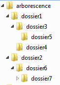

Explore your computer
Goals
- Learn the different types of files
- Browse the file system
- Create/delete/move folders and files from the command line
Files, formats and character encoding
File types
- executable files: they contain programs
- data files: they contain different types of information: text, image, audio, video.
File types (another taxonomy)
- text files: data is stored using electronic text (characters). They are human-readable.
- binary files: data is stored in binary format. They are computer-readable but not human-readable.

Punched card decks by ArnoldReinhold
Formats
- The file extension can be used as a hint to the format
- The format tells us the specific software we need to read it and/or manipulate it (e.g. data files) or run it (i.e. executable files)
Character encoding
- Any “text” is created from characters.
- Characters that are needed for a specific purpose are grouped into a character set.
- To refer to a character in an unambiguous way, each character is associated to a code point (a number).
- Characteres are stored in the computers as one of more bytes.
- A character encoding is a set of mappings between the bytes and the character set.
What character encoding?
UTF-8
Your machine might be using a different encoding by default (eg. Windows-1252 or CP-1252)
In this course we will work with:
- .txt plain text
- .csv tabular plain text (comma-separated values)
- .json JavaScript Object Notation. It stores and trasmits data consisting of attribute-value pairs and collections of elements
- .py source code in the script language Python
- .ipynb notebook documents used by Jupyter Notebook, interactive computational environment to work with Python
The file system
The terminal
- Also known as console, command-line interface
- It processes commands to a computer program in the form of lines of text
To open the terminal
- Linux: press CTRL + ALT + T
- Windows: press Windows + X; select Windows PowerShell or open the start menu and type “Powershell”
- Mac: in the Finder, open /Applications/Utilities (or use Launchpad and type “Terminal”)
Command
It is a request the user sends to the OS for it to execute it. Elements:
- Name of a executable program (e.g. python)
- A set of options whose name is preceded by one or two hyphens (e.g. -i or --help)
- A set of arguments to define the file(s) or the data that must be used
Command example
python my_wonderful_collation_script.py
File/directory naming conventions
Do not use whitespaces!
(and avoid special characters as well)
Paths
- A path specifies a unique location in a file system. It points to a
location by following the directory tree hierarchy, thus it looks
like a slash-separated list of directory names followed by either a
directory name or a file name. Eg.:
- macOS: /Users/username/Desktop
- Linux: /home/username/Desktop
- Windows: C:\Users\username\Desktop
Path representation (conventions)
- root directory
- UNIX: /
- Windows: \ (relative to current working directory root) or drive_letter:\
- directory separator
- UNIX: /
- Windows: \
Path representation (conventions)
- current directory: .
- parent directory: ..
Types of path
- relative: path in relation to the current location
- absolute: path in relation to the disk root
To change folder
- UNIX: cd directory_name
- Windows: Set-Location directory_name or cd directory_name or chdir directory_name

We are in “dossier3”
- “my” absolute path: /arborescence/dossier1/dossier3
- to move to dossier5 (relative path): cd dossier5
- to move to dossier1 (relative path): cd ..
- to move to dossier4 (relative path): cd ../dossier4
- to move to root: cd /
Directories
When we open the terminal, we are at the root of our personal folder
List the contents of a directory
- UNIX: ls
- Windows: ls or dir
Exercise 1
- Open the terminal
- List all files and directories
- Go to your desktop
Modifying the file system
Create a directory
- UNIX: mkdir directory_name
- Windows: mkdir directory_name or New-Item directory_name
Copy a file
cp file_name_source file_name_output
Move a file
mv file_name_source file_name_output
Delete a file
rm file_name
Delete a directory
rm -r directory_name
Exercise 2
Using the command line:
- Open the terminal and go to your desktop or documents folder
- Create the folder “my_data”
- Bonus (optional): Copy or move at least one of the files with which you want to work in this course
Additional materials
OS: Windows
- Dawson, Ted: “Introduction to the Windows Command Line with PowerShell”. The Programming Historian.
OS: All
- Milligan, Ian & Baker, James: “Introduction to the Bash Command Line”. The Programming Historian.
- W3C: “Character encodings for beginners”.
- Priceton University Library: “File naming and structure”. Research Data Management at Princeton.
Resources
- Encoding Explorer (by Webatic)
- FileInfo (database with file formats and extensions)